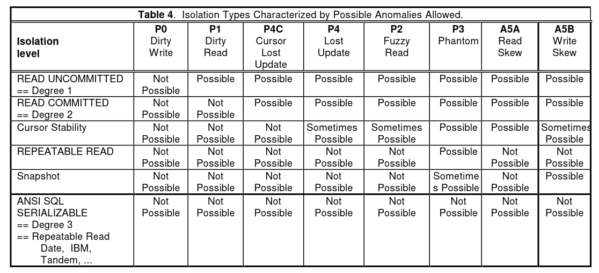
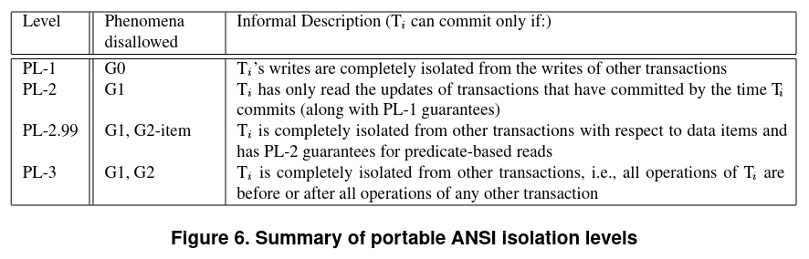
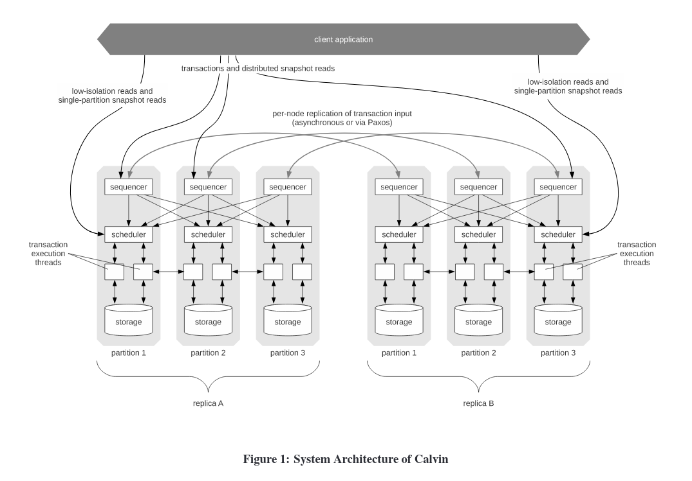
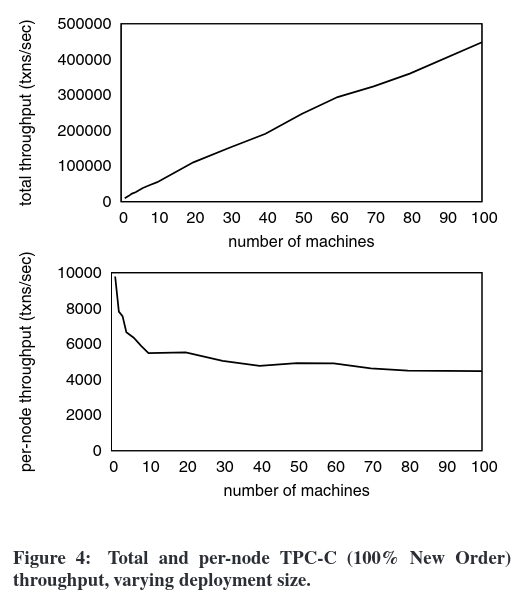
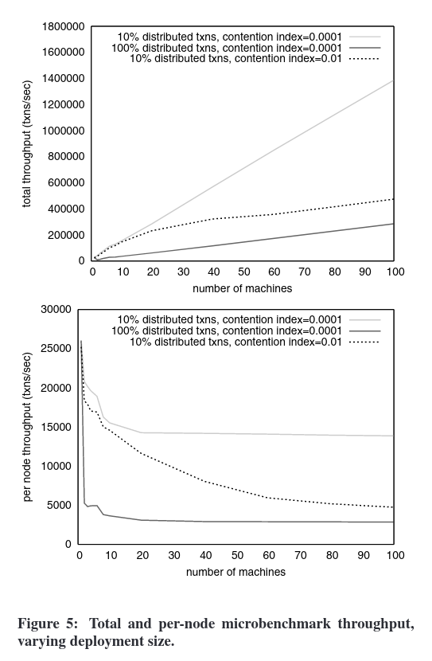
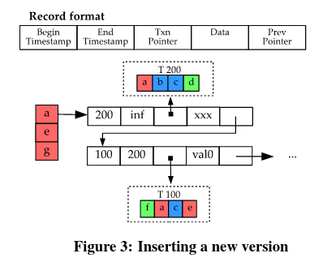
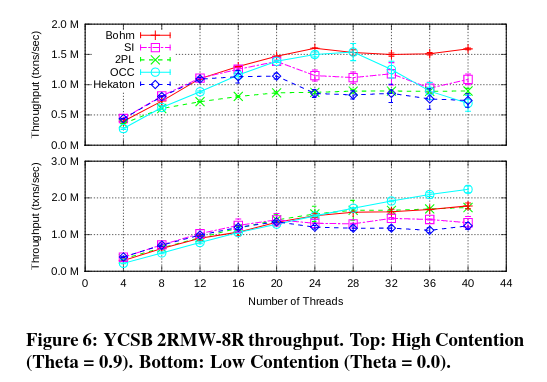
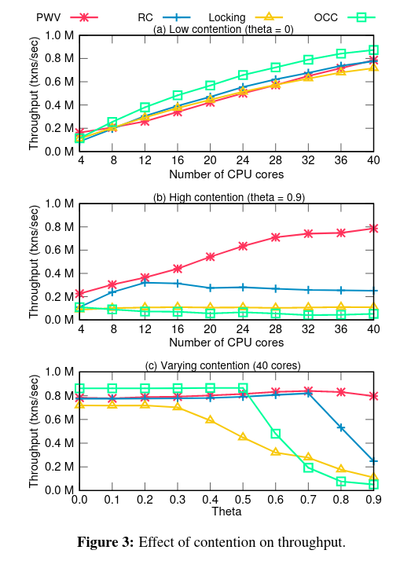
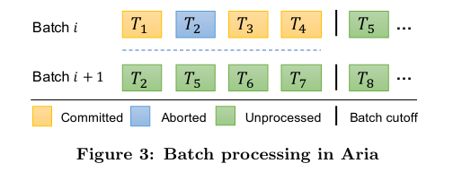
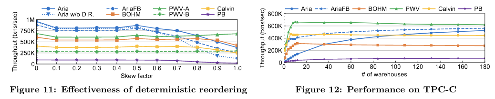

确定性数据库是近年来一个新的研究热点，本文将沿着确定性数据库的发展历程，对其做一个基本的介绍。
何为确定性
一言蔽之，确定性指的是“给定一个的输入集合，毕竟有且仅有唯一的输出结果”。但是在提到确定性数据库的时候，它最大的特点是“事务在开始时就是确定的，没有交互过程”。之所以这么说，是因为确定的事务输入，是唯一输出的必要不充分条件。本质原因在于，在交互式事务中，我们想让事务原子性的发生在一个时间点，但由于有了交互，事务过程中可能出现一些说不清、道不明的状态，包括但不限于：
- 交互式事务会出现死锁状态，出现死锁时，哪个事务被 abort 是不可预知的
- 为了使事务不失败，在有些数据库有 auto retry 的逻辑，这一步也含有不确定性
除了输入，在一个 DBMS 中，还有许多非确定性的环节，例如网络错误、节点损坏，确定性数据库需要保证整个系统对客户端是一个完美的黑盒。有的文章认为，在 2pl 的系统中，lock 顺序取决于网络传输和操作系统的线程调度吗，这也属于不确定性的一部分，本文不做这样的假设，因为在一个操作被返回到客户端之前，DBMS 内部做如何调度是自由的，即使是确定性数据库，也是依照已经输入的顺序进行执行，在输入顺序被确定之前，对于客户端仍然是未知的状态。
关键技术
本段将讲述历史上的确定性数据库和交互式数据库的区别，主要参考「An Overview of Deterministic Database Systems」[1]。
有序持锁
锁的概念只存在于数据库的实现中，锁并不是数据库实现所必须的，这里的「锁」指的是获得向数据库写入或读取的权力。在确定性数据库中，有序持锁指的是拿锁优先级是按照事务发生的时间，也可以说是按照 input log 中的顺序。因为事务没有交互，所以我们可以认为事务的过程也是原子性的，即从其他任何事务观察一个事务，它比自身事务的所有操作要么早，要么晚，不存在它发生在自身事务的两个操作中间的情况。有序持锁带来的好处是：
- 不会出现死锁。假设有两个事务 $ts(T_1) < ts(T_2)$ 如果 $T_1$ 持有 $x$ 上的锁，$T_2$ 持有 $y$ 上的锁，随后在 $T_1$ 尝试去获取 $y$ 上的锁的时候，在交互式数据库中就会出现死锁的现象。而根据有序持锁的要求，此时 $T_1$ 应当持有 $x$ 和 $y$ 上的锁，$T_2$ 则需要等待 $y$ 上的锁释放。
- 不会出现结果不确定的锁竞争。假设有三个事务 $ts(T_1) < ts(T_2) < ts(T_3)$，如果 $T_1$ 持有 $x$ 上的锁，$T_2$ 和 $T_3$ 尝试去获取 $x$ 上的锁，在交互式数据库中他们都会陷入等待的状态，而当 $T_1$ 结束后，$T_2$ 和 $T_3$ 到底谁应该进入到持锁条件中是不确定的。而根据有序持锁的要求，此时应当由更早发生的 $T_2$ 持有 $x$ 上的锁。
但是在物理上，事务的输入并不是一个瞬间的，原子性的过程，所以还是会出现死锁的情况，此时需要设计一个争夺锁的机制，即 $T_1$ 需要抢占 $T_2$ 持有 $y$ 上的锁。
Calvin[2] 采用了 Optimistic Lock Location Pre-diction(OLLP)[3]，把事务的运行分为两个阶段，在输入过程中，尝试加锁，输入结束后，再将事务加入到 input log 中，在上面死锁的例子中，$T_1$ 和 $T_2$ 都能够被成功的加入到 input log 中，之后会进入执行阶段，在这一阶段，$T_2$ 会发现自己实际没有持有 $y$ 上的锁（被 $T_1$ 抢占），此时这个事务会 abort，之后被重新加入到 input log 中。
事务依赖图
根据事务依赖图定义的隔离级别是「Generalized Isolation Level Definitions」[4]所提出的与数据库实现无关的隔离级别。此前影响较大的隔离级别定义主要是 ANSI SQL-92 和「A Critique of ANSI SQL Isolation Levels」[5]。
ANSI SQL-92 通过列举 Anomaly 的方式提出了四项隔离级别，也是当今最常用的隔离级别：
- Read uncommitted
- Read committed
- Repeatable reads
- Serializable
「A Critique of ANSI SQL Isolation Levels」这篇文章认为 ANSI SQL-92 的定义过于简略，并对其做了补充，提出了一些新的 Anomaly，其中的 Snapshot Isolation 因为和 MVCC 的吻合度高，被被广泛使用。

在「A Critique of ANSI SQL Isolation Levels」之前，ANSI SQL-92 的定义不明确造成了商业数据库标称隔离级别的混乱，这一现象影响至今，在 ANSI SQL-92 的定义中，只要不发生 Dirty reads, Non-repeatable reads, Phantom reads 就属于 Serializable 的隔离级别，但这明显和 Serializable 的语义不符，Write skew 就是一个很好的反例。但是这篇文章依旧没有解决隔离级别的定义与数据库实现相关的问题，甚至更加深入了数据库的实现细节，最终解决这一问题的是「Generalized Isolation Level Definitions」，Adya 等人提出了基于依赖图对隔离级别进行定义的方式。

从这一隔离级别鲜为人知的事实就可以看出，这套定义相当的不遭人待见，这里以作者的拙见，简要分析一下其原因。上图就是「Generalized Isolation Level Definitions」给出的隔离级别定义，这个定义有着简洁的美感。但是问题在于，如果数据库不能达到 PL-3 的隔离级别（这一级别类似于真正的 Serializable），依照这个定义，很有可能会掉落到 PL-2 上面去，而与 PL-2 类似的隔离级别是 Read committed6。商业数据库固然是尽可能将自己的隔离级别定义成高的，在 ANSI SQL-92 的定义下，Snapshot isolation 能够摸到 Serializable 的下限以至于有的数据库就可以声称自己是 Serializable 的，而在这套隔离级别下，很可能就只能被标识为 PL-2 了。作者显然也意识到了这个问题，特意在 PL-2 和 PL-3 之间开了个洞——PL-2.99，简单的解释 PL-2.99 与 PL-3 的区别就是 PL-2.99 允许 Phantom 现象，而 PL-3 不允许。这个洞使得 ANSI SQL-92 能够在这一套隔离级别中找到自己的定位，但对于「A Critique of ANSI SQL Isolation Levels」所提出的更精细的定义来说，这套隔离级别的分级跨度过于大了。
但是事务依赖图在确定性数据库里有了广泛的应用，因为他所给出的定义非常简单，并且很适合确定性数据库去实现，如果能够达到 PL-3 或者 PL-2.99 的隔离级别，那么这个数据库的隔离性就得到了保障。确定性数据库就是基于这一点，对事务进行分析，尤其在冲突场景，对事务的重排使得在交互式事务中需要等待解决冲突的场景能够并行提交，考虑以下几个事务。
| $T_1$ | $T_2$ | $T_3$ |
|---|---|---|
| $w(x, 1)$ | ||
| $w(x, 2)$ | ||
| $r(x)$ |
在一般的数据库实现中，我们通常要让 $T_1$ 阻塞住 $T_2$ 的写入，但是在充分优化的确定性数据库中，我们可以直接写入 $w(x, 2)$，而忽略 $w(x, 1)$，并且让 $T_3$ 直接读到 $T_2$ 的写入结果（不必从存储引擎里读取）。
Coordination
在这一节，我们假设存在一个理想的数据库，研究它与使用 Percolator 模型[7]（Two-phase commit）的区别和优劣势。
The only coordination that needs to happen in a deterministic database system is the communication required to agree on the input to the system.[1]
在一个分布式的确定性数据库中，唯一需要达成的共识在于哪些事务能够被添加到 input log 当中去，在达成这一步共识之后，我们就可以根据当前的状态和 input log 得到唯一的输出结果。
| Deterministic Commit | Two-phase commit |
|---|---|
| Coordination the input log(ordering) | Prewrite with lock |
| Commit input log | Commit & erase lock | primary |
| Commit & erase lock | secondaries |
此处，确定性数据库的 Commit input log 和 2pc 的 Prewrite with lock 的 keys 是同一个数量级的，而关键点在于 Deterministic Commit 的定序步骤（ordering）的开销和 2pc 的失败清理成本之间的比较。在两个事务冲突时，Deterministic 的 ordering 步骤能够协调这一点，而 2pc 需要 abort 一个事务，随后异步清理其 prewrite 的数据；在多个事务出现成环依赖时，ordering 步骤应该阻止某一个事务进入 input log，而 2pc 依旧会让某一个事务 abort，留下需要被清理的数据。
2pc 的一大优势是水平扩展容易，因为它在执行时候不需要考虑事务与事务之间的关系，而 Deterministic 的 ordering 步骤在大规模并行化的事务提交场景中，成本也会随之升高，尤其是分布式 ordering，至今仍是一大难题。
这里我不敢讲述太详细的实现，因为过于细致会偏离 Deterministic 的共性点，在后文对确定性数据库历史做说明的时候会讲述每个数据库单独的处理策略。
历史上的确定性数据库
H-Store[8]
一个非常简单的实现确定性的数据库的做法是，只要没有并发，那么 Serializable 和 Deterministic 就是信手拈来的，这个做法虽然简单，但是也带来了不可忽视的性能损失——无法利用多核 CPU，无法做到横向扩展。H-Store 是一个分布式内存数据库，它将数据分片，以 site 为最小单位，在每个 site 中，数据是没有并发的。这么设计的原因是 H-Store 假设 OLTP 型事务很短，并且主要瓶颈在于 I/O 延迟，在使用内存优化掉 I/O 延迟，并且在不同的 site 之间设计并发机制，其并发度已经足以应对当时的 OLTP 场景。H-Store 将事务分为两类：
- Single-sited Transactions，只存在于一个 site 上的事务，将事务发送到对应的 site 上去执行
- One-shot Transactions，涉及到多个 sites，但是每一条语句只存在于一个 site 上
尽管 H-Store 的论文里没有提到 Deterministic，但其分片后顺序化执行的思路还是被认为是一种 Deterministic 的尝试。
Calvin[2]
「The Case for Determinism in Database Systems」[3]设计了一个接受所有事务请求的节点，这个节点还会将事务持久化，然后按照接收到事务的 ts 将事务加入到 input log 里面去。这个设计存在的问题在于单点，包括出现故障时无法恢复和扩展规模时候的单点性能瓶颈。Calvin 添加了一个 sequencer layer。

我们只关注图中的 replica A 部分，每 10ms，sequencer 会将自己所接受到的事务发送给 scheduler，每个 scheduler 上都有一个 lock manager。Lock manager 只管理自身节点所持有的数据的持锁信息，分配锁是单线程进行的。在分配锁的过程中，必须遵守上文所提到的有序持锁的规则，分配锁的过程中需要每个 Lock manager 将自己所要读写的 key 发送到一个节点上。
| scheduler1 |
scheduler2 |
scheduler3 |
|---|---|---|
| $T_1(w(a, 1))$ | ||
| $T_2(w(a, 2))$ | $T_2(w(b, 2))$ | $T_2(w(c, 2))$ |
| $T_3(w(c, 3))$ |
其中，$ts(T_1)<ts(T_2)<ts(T_3)$。
根据我的理解，跨 node 的事务需要被发送到所有涉及到的节点，之后在 node 本地进行排序执行，需要注意的是，当事务对发送到 scheduler 的时候，他已经不允许失败了，所以 Calvin 会在持久化输入事务之后再将他们发送到 scheduler 节点。对于 $T_2$，我认为 sequencer 应该分割之后，分别发送给参与该事务的 scheduler。

图为 Calvin 的 TPC-C 性能测试，这里 Calvin 是按照 warehouse 进行分区的，每个 partition 上存在 10 个 warehouses，通过安排 warehouses 的分布，使得大部分事务对于 sequencer 来说都是本地事务，这里极大的缩小了定序过程中的开销。

在这个 benchmark 中，可以看到比起高冲突场景，Calvin 更加不适应分布式事务（非本地事务）。但是分布式事务虽然吞吐较低，仍然可以线性扩容，而高冲突场景随着节点的增加，其吞吐增长不呈线性。
以我的看法，Calvin 是一个好架构，但是冲突事务的能力有待提升。
BOHM[9]
从 BOHM 开始，Deterministic Database 进入了高速路，伴随着越来越特化的架构，产生了如摩尔定律般增长的 QPS。
BOHM 的特点在于：
- 中心化递增的 ts 分配
- 改变了 MVCC 的实现方式，让 Serializable 的实现不以大量牺牲性能为代价
- 引入了事务依赖图，让原本不能并发执行的事务变得可并发

BOHM 的 version 有五个字段
- Begin ts，数据写入的 ts
- End ts，数据失效的 ts
- Txn pointer，写入该 version 的事务指针
- Data
- Prev pointer，上一个版本的指针
Version 的有效期是
读操作在写操作完成之后进行，在读取一个 key 的时候，会找到
如果 $T_i$ 和 $T_j$ 都尝试写入 $x$，并且他们之间没有读取依赖，得益于 MVCC，他们可以并行写入。

Benchmark 表明，越高冲突的场景，BOHM 的效果越好，在高冲突高并发的情况下，乐观事务模型出现了大幅度的性能回退。
PWV[10]
在一般的数据库系统中，一个事务的数据要被其他事务看见，有两种机制：
- 提交可见性，一但一个事务完成了提交，它所写入的数据就能够被其他事务所读取到，其优点在于事务与事务的耦合性低。但是在一个 Serializable 的系统中，这一策略可能会增加延迟、降低整体的并行度。
- 写入可见性，一个事务即使没有提交，他所写入的数据就可以被其他事务读到，但是如果这个事务最后失败了，读取到其数据的事务也需要 abort 防止脏读。Abort 是连锁式的，可能会付出极大的代价。
这篇文章进一步将事务 abort 的原因分为两类：
- 逻辑原因，事务违反了约束条件
- 系统原因，包括死锁，系统错误，乐观事务中的写冲突
但是在确定性数据库中，abort 只会因为两个原因产生：
- 逻辑原因，同上
- 写入可见带来的 abort，$T_2$ 需要根据 $T_1$ 的写入值去修改某个值，这一修改可能会因 $T_1$ 的结果产生逻辑原因的 abort
为了防止以上原因带来的脏读，论文设计了一个叫 commit point 的概念，一但事务达到了 commit point，这个事务就一定可以提交，并将写入分为两类：
- 在 commit point 之前的，可能会 abort，需要在 commit point 之后被读取到
- 在 commit point 之后的，不会 abort，一但写入成功就能被读取到
论文进一步将事务按照 commit point 分割为 pieces，并且引入 rendezvous point(RVP) 来标记一个 piece 的依赖是否已经完成执行。(I’m not quite sure for this mechanism)
我们用

和 BOHM 类似，PWV 在高冲突场景下的表现十分喜人，相比之下 OCC 在极端的高冲突场景下临近奔溃。
PWV 的论文实现还有许多细节，核心思想就是让事务在完全提交前就能被读取到的同时处理写写依赖，其实现远比想法复杂，这里不再详细展开了。
Aria[11]
BOHM, PWV 和 Calvin 的策略都是定序-执行两阶段，Aria 提出了一个新的想法，如果定序和执行能够放在一起，是否能取得更好的性能、以及在不同场景下更加均衡的表现（更好的泛用性）呢？
Aria 在执行阶段采用 reservation 的机制，并且以全局递增的事务 id 作为优先级的标准（这一机制是达成 deterministic）的关键。如果 $ts(T_1) < ts(T_2)$，$T_2$ 对 $x$ 做了 reservation，当 $T_1$ 也尝试对 $x$ 做 reservation 的时候，会发现 $x$ 被一个 id(此处为 ts) 比它大的事务占有了，于是就会发生强占。

在 Aria 的 batch commit 机制中，冲突事务会被安排到下一个 batch，而因为被安排到下一个 batch 的事务的 id 必然享有比所以新事务更高的优先级，所以它不会因为诸如线程调度的原因被无限制的 delay。
在使用 reservation 机制的同时，会发现它使得可以并发执行的冲突事务不能执行了，包括 RaW 和 WaW，因为冲突的事务会被安排到下一个 batch，这导致高冲突场景下事务可能是串行执行的。为了解决这一问题，Aria 也引入了重拍机制。
其中有一个小技巧是将 RaW 转化为 WaR，消除一部分 reservation 冲突。如果 $ts(T_1) < ts(T_2)$ 并且 $T_2$ RaW 依赖于 $T_1$，$T_2$ 理应被放到下一个 batch，这样事务执行的顺序是 $T_1 \to T_2$，但只要我们调换这一顺序，让它变成 $T_2 \to T_1$，这一依赖就变成了 $T_1$ WaR 依赖于 $T_2$。
在应对高频 WaW 的场景，Aria 会在 commit 阶段结束后尝试去提交冲突的事务，称为 Aria-FB，但由于给全局增加了一个阶段，这一策略的效果有待商榷。

左图为随着偏态值（一定程度代表冲突概率）提升时，不同确定性事务模型的性能变化，处理小于 0.5 偏态值的场景时，Aria 的表现都较为平滑。右图的 TPC-C benchmark，随着 warehouse 的提升，Aria 的稳定性也逐步提高，其吞吐量越来越接近 PWV。
我认为 Aria 与 BOHM 和 PWV 最大的区别在于，它不再追求极端冲突场景下的性能，而将目光转向离现实更加接近的目标，提升多场景下的稳定性，同时在极端场景下也能保留一部分确定性数据库的优势。
小结
本文大致梳理了历史上的确定性数据库，里面也夹杂了作者的一些个人观点。整体而言，确定性数据库的发展经历了从为了解决一些特定问题，演变成追求高冲突场景下的性能，最后回归到构建泛用的确定性模型上。
我认为，在工业界，确定性数据库的思想能够解决一些问题，但其中存在这许多学术研究中不会涉及到的难题，还需要大量的时间和实验去验证。
参考资料
- [1] An Overview of Deterministic Database Systems
- [2] Calvin: Fast Distributed Transactions for Partitioned Database Systems
- [3] The Case for Determinism in Database Systems
- [4] Generalized Isolation Level Definitions
- [5] A Critique of ANSI SQL Isolation Levels
- [6] Elle’s consistency model
- [7] Large-scale Incremental Processing Using Distributed Transactions and Notifications
- [8] H-Store:AHigh-Performance, Distributed Main Memory Transaction Processing System
- [9] Rethinking serializable multiversion concurrency control
- [10] High Performance Transactions via Early Write Visibility
- [11] Aria: A Fast and Practical Deterministic OLTP Database